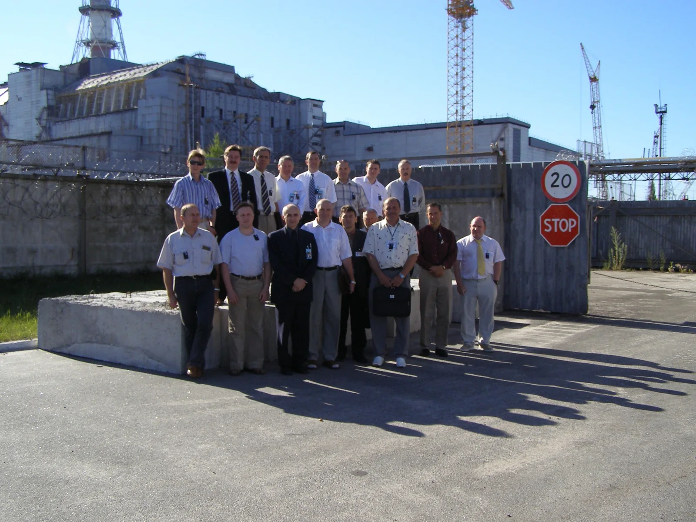
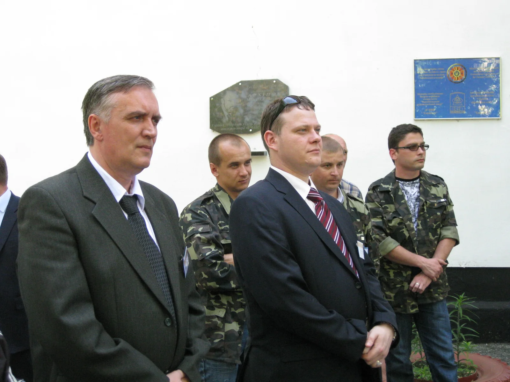
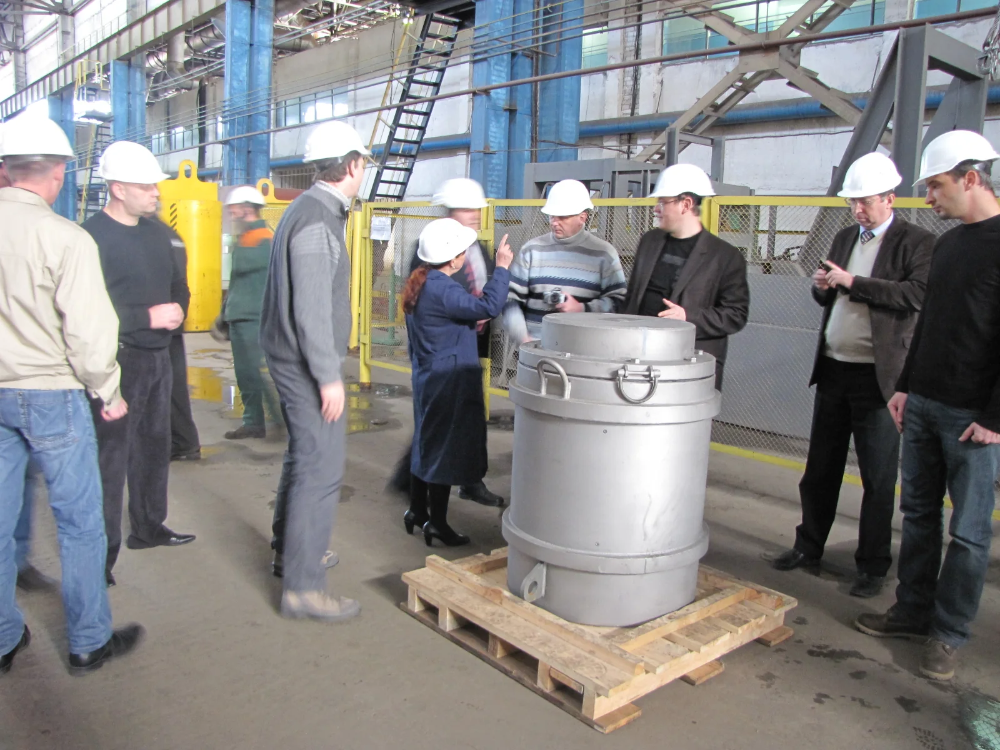
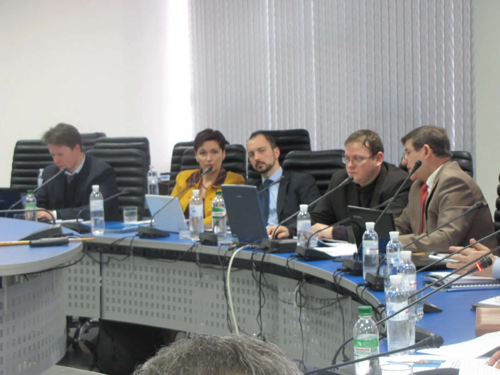
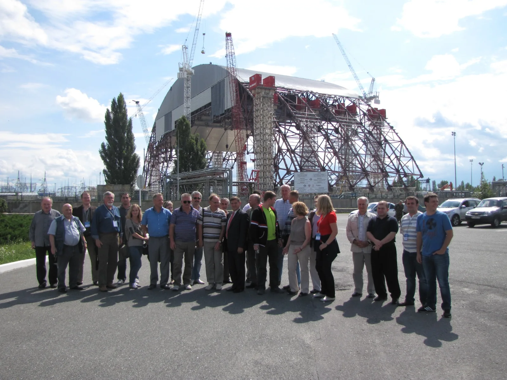
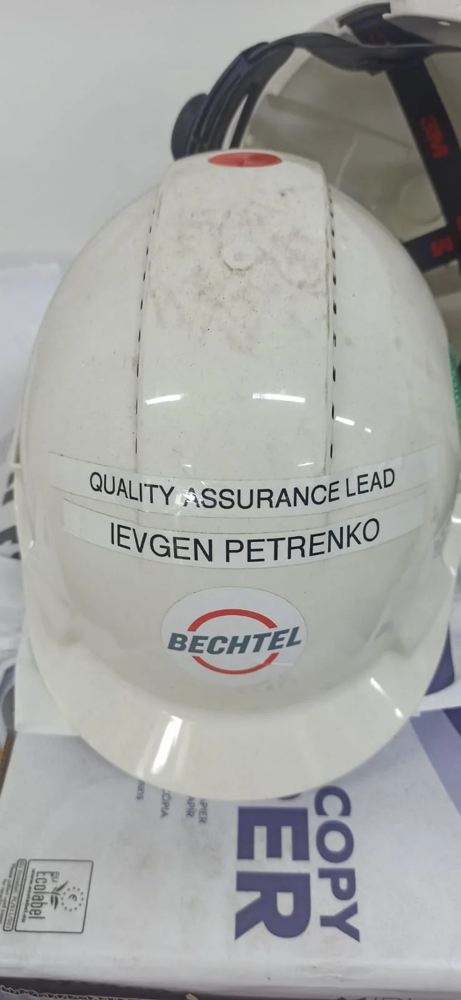

Polska buduje nie tylko elektrownię jądrową. Buduje ekosystem jądrowy.
Polski program jądrowy jako wyzwanie integracji: inwestor, niezależny regulator, technologia, EPC, wykonawcy, przemysł, łańcuch dostaw i operator.
Czytaj artykuł po polskuConnecting nuclear regulation, technology, programme delivery and industry to build capable organisations, resilient supply chains and executable nuclear programmes.

I am a senior nuclear professional with more than 20 years of experience across nuclear regulation, EPC delivery, project and programme management, nuclear safety, industrial capability development and international nuclear programmes.
My experience includes regulatory oversight, AP1000® delivery in Poland, nuclear research, radioactive waste and spent fuel projects, supplier development, licensing and cooperation with international nuclear organisations and industrial partners.
I add the greatest value where the regulator, technology provider, project organisation, EPC, supply chain and industry need to work as one system.
Integration of engineering, licensing, quality, construction, supply chain and organisational readiness.
Nuclear regulation, licensing interfaces, regulatory readiness and translation of requirements into project execution.
Supplier readiness, nuclear capability development, local content and preparation of industrial organisations for nuclear delivery.
International nuclear programmes, multidisciplinary projects, stakeholder interfaces, risk, change and programme delivery.
Nuclear quality, regulatory interfaces, supplier readiness, engineering and construction support within the Polish AP1000 programme.
Former state nuclear inspector with experience in licensing, inspections, safety assessment and regulatory decision-making.
Experience across European and international nuclear programmes, research, radioactive waste, spent fuel and nuclear infrastructure.
Supporting industrial organisations in developing the systems, competence and evidence needed to participate in nuclear projects.
Selected moments from international nuclear, radiological safety, certification, capability-development and new-build work.

IAEA Technical Cooperation Project UKR/4/011, “Support for the Decommissioning of Chornobyl NPP”. Workshop on preparation and management of human resources for decommissioning, July 2006.

Public acceptance of the Comprehensive Radiation Monitoring and Early Warning System of the Chornobyl Exclusion Zone, 2011.

Certification tests of the PKTIB-120N transport packaging set for the storage and transportation of radioactive sources of ionizing radiation.

Kick-off meeting for the manufacture, supply, installation and commissioning of technical training equipment for the National Center for Maintenance and Personnel Management Training at Zaporozhye NPP, under a European Commission contract.

Technical workshop focused on the safe management of disused sealed radiation sources, long-term storage technologies and international experience exchange.

Quality Assurance Lead role within the AP1000 Poland project environment, supporting nuclear quality and project delivery.
Selected professional insights on nuclear programme delivery, industrial readiness, nuclear quality, regulatory interfaces and the practical challenges of translating nuclear requirements into execution.
Polski program jądrowy jako wyzwanie integracji: inwestor, niezależny regulator, technologia, EPC, wykonawcy, przemysł, łańcuch dostaw i operator.
Czytaj artykuł po polskuEight industrial pillars, three practical policy instruments and clear accountability for Europe's nuclear delivery capability.
Read articleFrom compliance evidence to demonstrated, scope-specific supplier capability: three readiness levels, vertical-slice testing and accountable release decisions.
Read articleWhy durable industrial capability, integrated delivery and responsible programme governance matter beyond the first nuclear plant.
Read articleWhy similar nuclear terminology can carry different regulatory consequences, and why classification must begin with safety function, regulatory basis and traceable requirements.
Read articleA strategic framework for assessing national readiness across governance, regulation, owner capability, workforce, supply chain, programme integration and climate resilience.
Read articleWhy management-system certification, supplier qualification and acceptance of commercial-grade items are different assurance questions in nuclear procurement.
Read articleWhy safety-related concrete depends on design control, qualified materials, controlled execution, testing, traceability and long-term assurance, not strength alone.
Read articleOpen to selected senior leadership, programme integration, strategic advisory and nuclear industry cooperation opportunities.
Email: petrenko.eugene@gmail.com
LinkedIn: Ievgen Petrenko